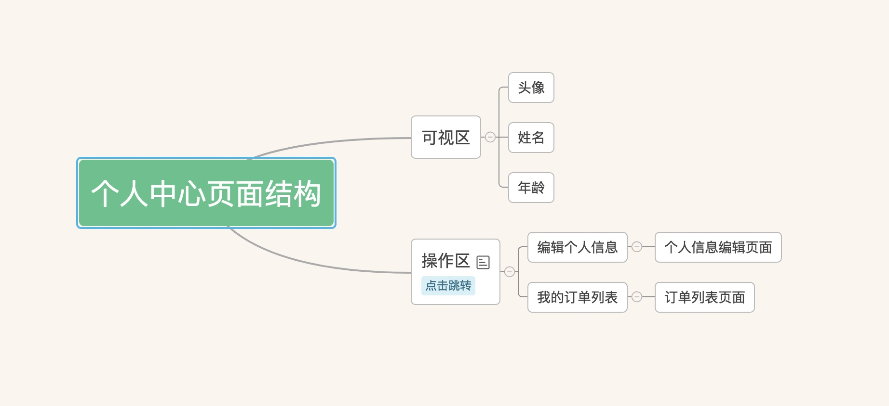

<link rel="import" href="../../bower_components/polymer/polymer-element.html">
<link rel="import" href="../../bower_components/polymer/lib/elements/dom-repeat.html">

<dom-module id="task-index">
  <template>
    <style include="shared-styles">
      :host {
        display: block;

        padding: 10px;
      }
    </style>
      <h1> 练习介绍页 </h1>
      <h5>1. 实现一个简单的个人中心功能</h5>
      <p> > a. 主要包含三个页面 个人中心, 个人信息编辑, 订单列表 (列表请使用 paper-item 实现内容不限)</p>
      <h5>2. 具体页面结构如下图(布局不作特别要求)</h5>
      
      <h5>3. 任务目的</h5>
      <p> > a. 熟悉 polymer 的组件的基本组成和生命周期</p>
      <p> > b. 熟悉 polymer 的数据绑定机制(包括父组件和子组件之间的参数传递)</p>
      <p> > c. 了解 polymer 的事件传播机制</p>
      <p> > d. 了解 polymer 的路由机制(app-route)</p>
      <h5>4. 参考文档</h5>
      <a href="https://polymer-zh.cn/2.0/start/"> Polymer 2.0 文档主页 </a> <br>
      <a href="https://github.com/Polymer/polymer"> Polymer 项目 Git 地址 </a> <br>
      <a href="https://github.com/PolymerElements"> Polymer-Element Git 地址</a> <br>
      <a href="https://polymer-zh.cn/2.0/start/toolbox/set-up"> Polymer CLI 学习和项目启动方式 </a>
  </template>

  <script>
    class TaskIndex extends Polymer.Element {
      static get is() { return 'task-index'; }
    }

    window.customElements.define(TaskIndex.is, TaskIndex);
  </script>
</dom-module>
